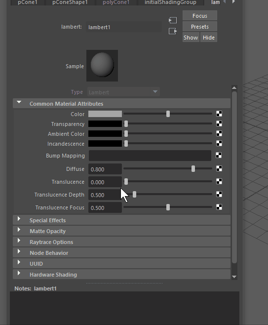
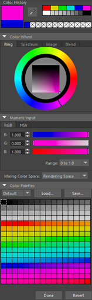
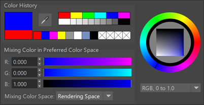

执行以下操作将显示
“颜色选择器”(Color Chooser)：
- 双击颜色样例（例如，在属性编辑器(Attribute Editor)中）。
- 按 Ctrl+P。 当以此方式打开时，“颜色选择器”(Color Chooser)窗口是模态窗口。您可以将颜色保存到“颜色历史”(Color History)区域色样或使用“滴管”(Eyedropper)选择或检查屏幕上的颜色。此外，还可以加载、保存和编辑选项板。但是，您无法在场景对象上设置颜色属性。
注： 如果单击色样，将显示“颜色选择器”(Color Chooser)的缩小版本，仅显示“颜色历史”(Color History)区域。但是，如果双击色样，将显示完整的“颜色选择器”(Color Chooser)窗口。

单击色样可查看较小的“颜色历史”(Color History)区域，或双击以访问完整的“颜色选择器”(Color Chooser)
使用“颜色选择器”(Color Chooser)可以：
- 从“颜色控制盘”(Color Wheel)或“调色板”中为属性或材质选择颜色。
- 导入图像并从中选择颜色。
- 将颜色融合到一起。
- 在“颜色历史”(Color History)中保存经常使用的颜色。
- 创建自定义调色板。
- 为某些 UI 元素设置 Alpha 透明度（请参见设置线框透明度）。

“颜色选择器”(Color Chooser)的精简版本（称为“颜色历史”(Color History)）会在单击色样时出现。此版本包含许多与完整“颜色选择器”(Color Chooser)相同的组件，但不包含“光谱”(Spectrum)、“图像”(Image)和“混合”(Blend)选项卡或“调色板”(Color Palettes)。有关所有这些选项的描述，请参见颜色设置。
